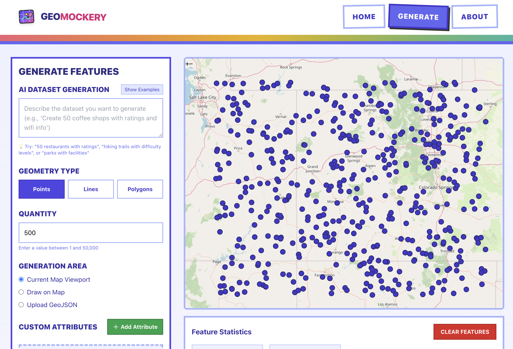
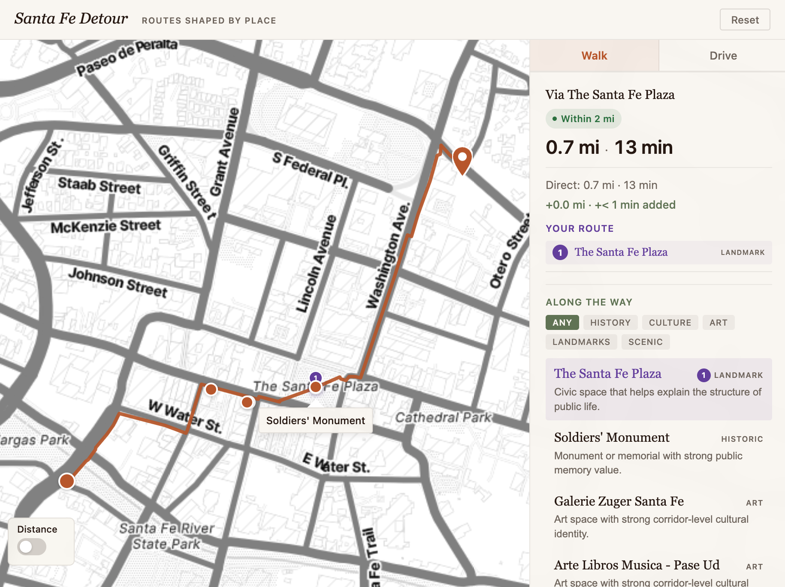
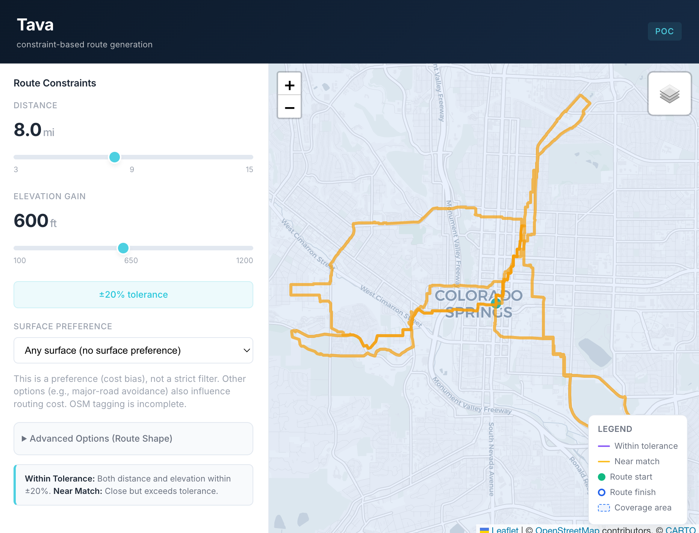
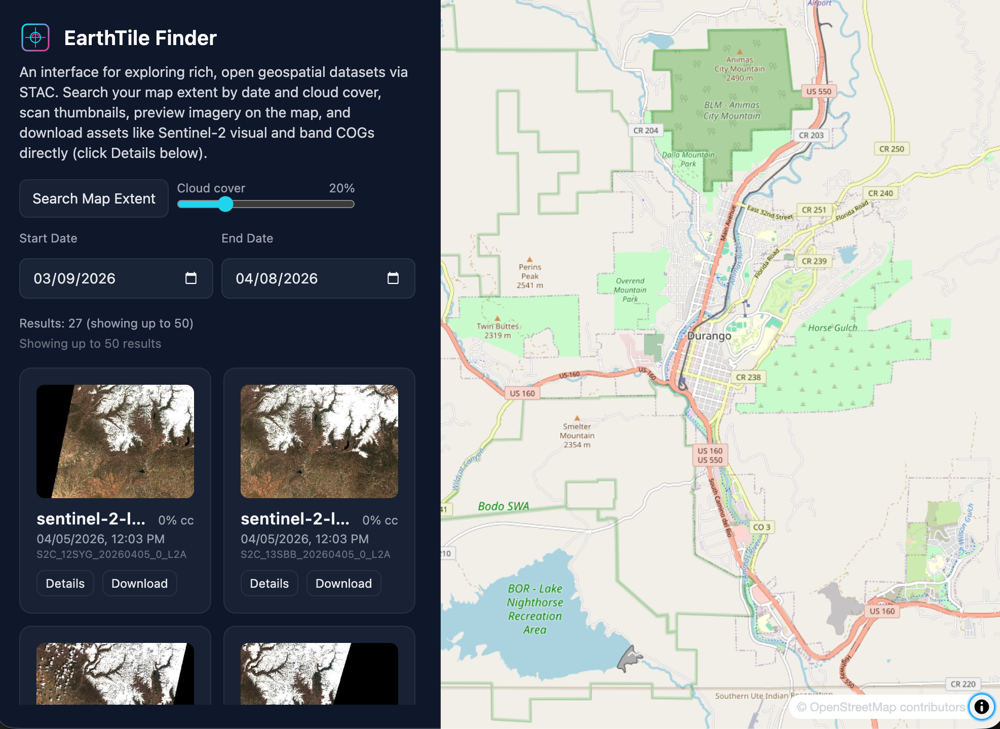

Small Batch Maps
I build geospatial tools with AI-assisted workflows.
Data pipelines, interactive maps, spatial analysis.
Navigate to selected work sectionI build geospatial tools with AI-assisted workflows.
Data pipelines, interactive maps, spatial analysis.
Navigate to selected work sectionRecent builds and R&D — not polished case studies, but working tools in active development.

Browser-based synthetic geospatial data generator. Draw a boundary, pick a geometry type, configure attributes, and export realistic mock GeoJSON or Shapefile data — no server required.

Routing app that finds the shortest path between two points, then suggests worthwhile detour stops — historic sites, art, scenic overlooks — with exact time and distance costs.

Route planner for cyclists and runners that generates optimized loops based on distance, elevation gain, surface type, and shape. Supports GPX export and covers Colorado Front Range terrain.

Search, filter, and preview satellite imagery scenes from the Earth Search STAC API. Filter by date range and cloud cover, visualize scene footprints on a map, and browse thumbnails — search state encoded in URL for shareability.
I'm a geographer and cartographer from Durango, Colorado — now based in Santa Fe, NM, where I spend my off-hours hiking and skiing the Mountain West.
I finished my PhD in Geography at UW–Madison in 2014, where my research focused on web mapping with emerging open web standards and open source tooling. From there I designed, built, and taught the graduate-level digital mapping curriculum for New Maps Plus — an award-winning program whose students have taken home four NACIS student dynamic map competition wins.
I stepped away from academia in 2024 to explore what these tools could do in industry, government, and the nonprofit sector. That curiosity is still what drives the work.
Lately I've been building with AI — using Claude Code and agents as a core part of my development workflow. It's changed how fast I can go from spatial problem to working tool.
I typically respond within 24 hours.
Whether you're mapping conservation areas, building spatial dashboards, or need a GIS developer for a bounded project — I'm open to it.